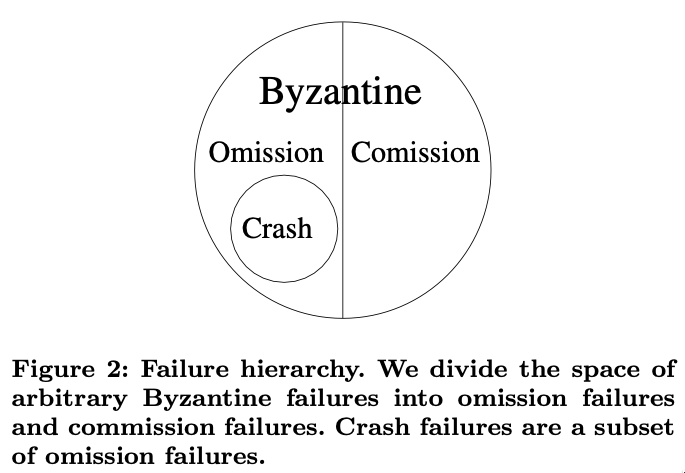
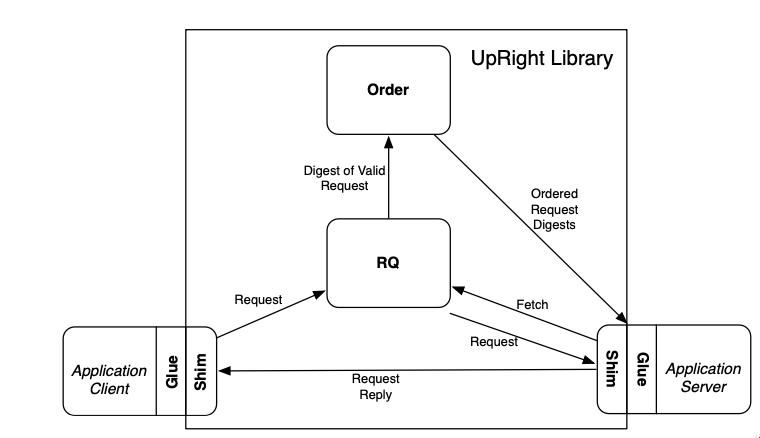
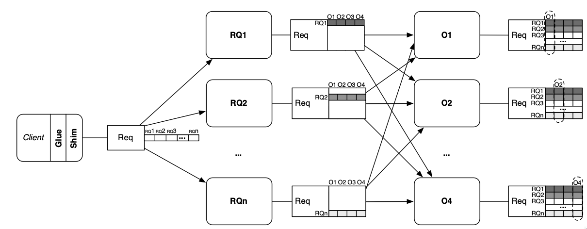
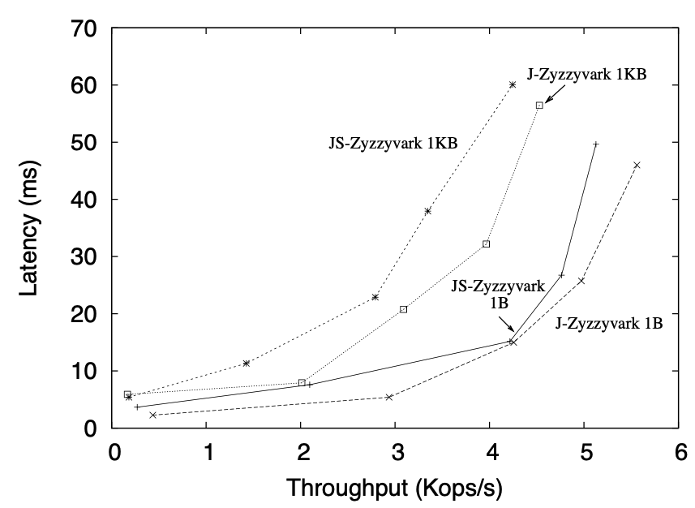
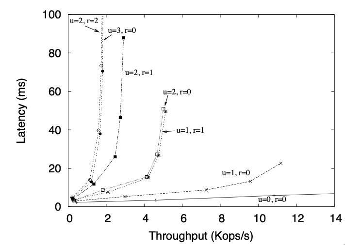
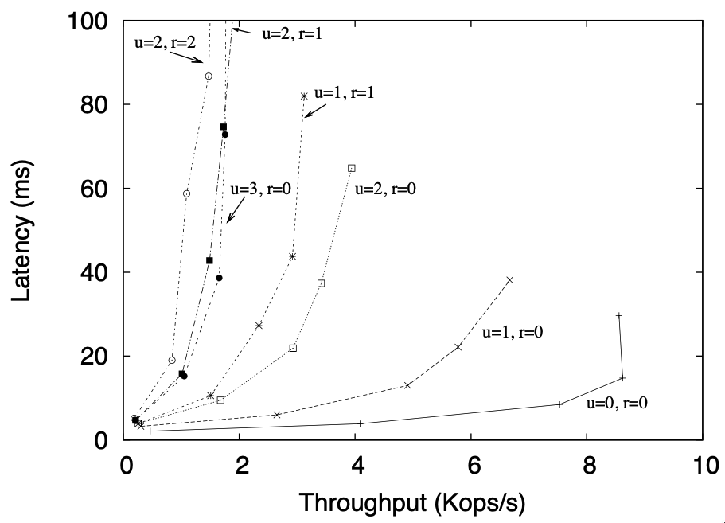
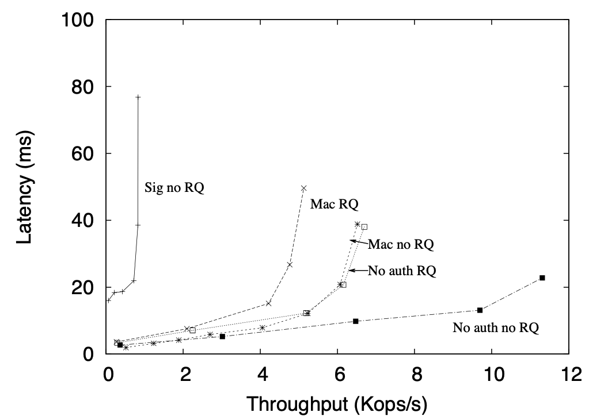
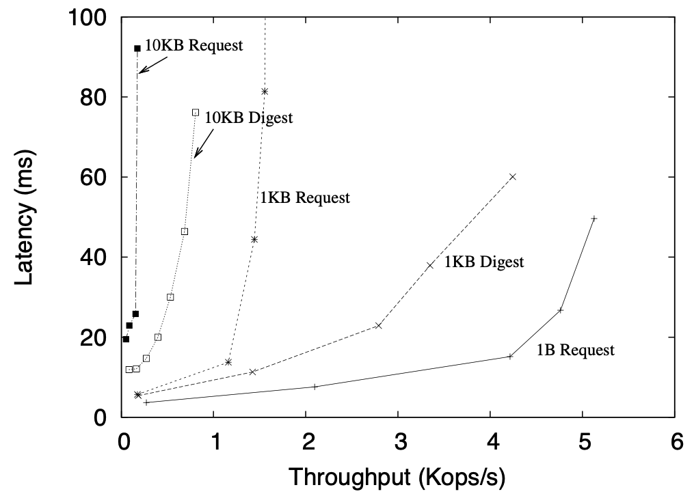

Upright Cluster Services
Paper: [1]
01-note
Failure Model

- \(u\) the total number of failures it can tolerate and remain live
- \(r\) the number of those failures that can be commission failures while maintaining safety
- Standard assumption \(u \ge r\)
\(u\) Omission failures
Omission failures (including crash failures) in which a node fails to send one or more messages specified by the protocol and sends no incorrect messages based on the protocol and its inputs.
\(r\) Commission failures
Commission failures, which include all failures that are not omission failures, including all failures in which a node sends a message that is not specified by the protocol.
System properties
- An UpRight system is safe ("right") despite \(r\) commission failures and any number of omission failures.
- An UpRight system is safe and eventually live ("up") during sufficiently long synchronous intervals when there are at most \(u\) failures of which at most \(r\) are commission failures and the rest are omission failures. If more than \(r\) commission faults exist, then the system is still live, but no longer safe.
- (Robust performance) An UpRight system ensures safety and good performance during sufficiently long synchronous intervals with an application-dependent bound on message delivery when there are at most \(u\) failures of which at most \(r\) are commission failures.
Applications using UpRight
Architecture

Figure 1: UpRight Library Architecture
Request Execution
- Spontaneous Replies
Applications may allow the server to push unsolicited messages to clients. For example, in Zookeeper, a client can watch an object and be notified of any changes to it.
- Read-only replies
As a performance optimization, UpRight supports PBFT’s [2] read-only optimization, in which a client shim sends read-only, side-effect-free requests directly to the server shims and server shims execute them without ordering them in the global sequence of requests.
- Multithreading
Parallel execution allows applications to take advantage of hardware resources, but application servers must ensure that the actual execution is equivalent to executing the requests sequentially in the order specified by the UpRight library.
- Nondeterminism
Many applications rely on real time or random numbers as part of normal operation. These factors can be used in many ways including garbage collecting soft state, naming new data structures, or declaring uncommunicative nodes dead.
Checkpoints
In an asynchronous system, even correct server replicas can fall arbitrarily behind, so BFT state machine replication frameworks must provide a way to checkpoint a server replica’s state, to certify that a quorum of server replicas have produced identical checkpoints, and to transfer a certified checkpoint to a node that has fallen behind. The hybrid check- point/delta approach seeks to minimize intrusiveness to legacy code. The hybrid checkpoint/delta approach uses existing application code to take checkpoints at the approximately the same coarse-grained intervals the original systems use. This work provides three checkpointing mechanisms for the Hybrid checkpoint/delta approach:
- Stop and copy
If an application’s state is small and an application can tolerate a few tens of milliseconds of added latency, the simplest checkpoint strategy is to pause the arrival of new requests so that the application is quiescent while it writes it state to disk.
- Helper process
The helper process approach produces checkpoints asynchronously to avoid pausing request execution and seeks to minimize intrusiveness to legacy code. To ensure that different replicas produce identical checkpoints without having to pause request processing, each node runs two slightly modified instances of the server application process, a primary and a helper, to which we feed the same series of requests. We deactivate the checkpoint generation code at the primary. For the helper, we omit sending replies to clients, and we pause the sequence of incoming requests so that it is quiescent while it is producing a checkpoint.
- Copy on write
Applications can be modified so that their key data structures are treated as copy on write while checkpoints are taken.
UpRight Protocol
- Client deposits a request at the Request quorum.
- The Request Quorum
- stores the request
- forwards a digest of the request to the order module
- supplies the full request to the execution module
- The order module produces a totally ordered sequence of batches of request digests
- The execution module embodies the application’s server, which executes requests from the ordered batches and produces replies

Request Quorum
- A client sends its request to the RQ nodes with a MAC authenticator
- An RQ node therefore stores each request before forwarding its digest
- Each RQ node checks its entry in the authenticator, and if the request appears valid, the RQ node sends the request to the order nodes with a MAC authenticator for them
- When an execution node receives an ordered digest, it notifies all RQ nodes that the request has been ordered and fetches the request from one of them.
- Validating requests
- The use of MAC authenticators rather than digital signatures is a vital optimization to BFT replication systems
- To ensure non-repudiation, this work uses a modified version of Matrix Signatures
- Rate-limiting
- An RQ node will store at most one unordered request per client and ignore any new requests from that client until it learns that the previous request has been ordered
- Execution nodes produce a checkpoint every
CP_INTERVALbatches, and they never fetch requests older than the two most recent checkpoints
Ordering
Inspired from Zyzzyva [NO_ITEM_DATA:kotlaZyzzyvaSpeculativeByzantine2007a], Aardvark [NO_ITEM_DATA:aardvark], and Yin et al [5]
- A client sends its request (via the RQ) to the primary
- The primary accumulates a batch of requests, assigns the batch a sequence number, and sends the ordered batch of requests to the replicas, the replicas send the ordered batch of requests and a hash of the history of prior ordered batches to the execution nodes
- The execution nodes accept and execute the batch of ordered request only if a sufficient number of ordering decisions and histories match
- Dependence on Execution
The separation of the order and execution stages requires coordination between the two to coordinate garbage collection and to ensure agreement on execution checkpoint state.
- Ordering - Execution coordination
- After executing batch \(B\) with sequence number \((i ∗ CP INTERVAL)\), an execution node begins to produce execution checkpoint \(i\)
- Once that checkpoint has been produced, the execution node sends a hash of the checkpoint with a MAC authenticator to the order nodes
- An order node refuses to order batch \(B′\) with sequence number \((i + 1 ∗ CP INTERVAL)\) until it has received a quorum of matching hashes for execution checkpoint \(i\)
Thus to order batch \(B'\), order nodes implicitly agree that a quorum of execution nodes report identical checkpoints.
- Execution recovery
- If an execution node falls behind (e.g., it misses some batches because of a network fault or a local crash-recover event), it catches up by sending the order nodes its current sequence number, and the order nodes respond with the hash and sequence number of the most recent execution check- point and with the ordered batches since that checkpoint
- The execution node then fetches the execution checkpoint from its peers and processes the subsequent ordered batches to get to the current state
- Need for execution
- It allows order nodes and execution nodes garbage collect their logs and checkpoints Once batch \(B′′\) with sequence number \(i + 2 ∗ CP INTERVAL\) has been ordered, the order and execution nodes garbage collect their logs and checkpoints up to and including batch \(B\)
- It is necessary for all correct execution nodes to eventually agree on the checkpoint that represents the state of the system after processing batch \(B\) The execution nodes cannot reach agreement on their own, so they rely on the order nodes
- Ordering - Execution coordination
Execution
Constraints
- Execution requires \(u+r+1\) replicas
- Fast-path execution requires \(u+1\) replicas
- Ordering requires \(2u+r+1\) replicas
- Fast-path ordering requires \(u+r+1\) replicas
- Request Quorum requires \(2u+r+1\) replicas The RQ stage requires \(2u + r + 1\) nodes to ensure that the order stage orders every properly submitted request and that the execution stage can fetch any request that is ordered: \(2u+r+1\) RQ nodes ensures that the primary order node can always be sent a request with \(u + r + 1\) valid entries in the matrix signature, which assures the primary that all order nodes will see \(u + 1\) valid entries, which assures the order nodes that execution nodes can fetch the full request even if \(u\) RQ nodes subsequently fail. Logical nodes can be multiplexed on the same physical nodes, so a total of \(2u + r + 1\) physical nodes can suffice
- Fast-path request quorum requires \(u+r+1\) replicas
Preferred quorum optimization
Using preferred quorums means optimistically sending messages to the minimum number of nodes and resending to more nodes if observed progress is slow
- A client first transmits its request to \(u + r + 1\) RQ nodes
- After a timeout, the client resends to all of the RQ nodes
- The first time an RQ node receives a client request it forwards the request only to the primary; upon any subsequent receipt of that request the RQ node forwards the request to all order nodes
- The RQ nodes are also good candidates for on-demand allocation via hot spares because activating a RQ node does not require transferring state from other nodes-the RQ module starts in a clean state and can immediately begin processing client requests
Hot spare optimization
Definition
Using hot spares means delaying allocation of some nodes until needed and then allocating those nodes from a pool of hot spares
Usage
- Using preferred quorums to send requests to subsets of execution nodes or making an execution node a hot spare may be most attractive if the application has only a small amount of state that must be transferred before a hot spare begins processing; otherwise it may be more challenging to configure execution nodes as hot spares without risking unacceptably long pauses when a spare is activated
- Some of this start-up time can be masked by activating an execution node once the checkpoint for its in-memory data structures has been transferred and then transferring its on-disk state in the background (not implemented in this work)
Performance
JS-Zyzzyvark is Java Stable Zyzzyva Aardvark J-Zyzzyvark is without disk bottleneck
Response time and throughput
Clients issue \(1\) byte or \(1\) KB null requests that produce \(1\) byte or \(1\) KB responses
- Basic configuration
The system is configured with \(u=1\) and \(r=1\)

Figure 2: Latency vs. throughput for J-Zyzzyvark and JS-Zyzzyvark.
- Other configuration
The system is configured with arbitrary \(u\) and \(r\)

Figure 3: Latency vs. throughput for J-Zyzzyvark and JS-Zyzzyvark for various values of \(r\) and \(u\)
- Co-located RQ, Order and Execution

Figure 4: Latency vs. throughput for JS-Zyzzyvark configured for various values of \(r\) and \(u\) with RQ, Order, and Execution nodes colocated
Request Authentication
Between matrix signatures, digital signatures, and MAC authenticators for \(1\) byte requests \(u=1\) \(r=1\) No RQ means we skip Request Quorum No auth RQ means that we turn of auth checks

Figure 5: JS-Zyzzyvark performance when using the RQ node and matrix signatures, standard signatures, and MAC authenticators. ($1$B requests)
Request digests

Figure 6: JS-Zyzzyvark performance for $1$B, $1$KB, and $10$KB requests, and for $1$KB and $10$KB requests where full requests, rather than digests, are routed through Order nodes
Zookeeper
- Handles omission failures
- Zookeeper deployment consists of \(2u+1\) servers
- Common configuration is \(5\) servers with \(u=2\), \(r=0\)
- Servers maintain a set of hierarchically named objects in memory
- Writes are serialized via a Paxos-like protocol, and reads are optimized to avoid consensus where possible
- A client can set a watch on an object so that it is notified if the object changes unless the connection from the client to a server breaks, in which case the client is notified that the connection broke
- For crash tolerance, each server synchronously logs up- dates to stable storage
- Servers periodically produce fuzzy snapshots to checkpoint their state: a thread walks the server’s data structures and writes them to disk, but requests concurrent with snapshot production may alter these data structures as the snapshot is produced
- If a Zookeeper server starts producing a snapshot after request \(s_{start}\) and finishes producing it after request \(s_{end}\), the fuzzy snapshot representing the system’s state after request send comprises the data structures written to disk plus the log of updates from \(s_{start}\) to \(s_{end}\)
Notes
- This is an SMR Protocol.
- It is in the partial synchrony network model.
- It uses an unspecified definition.
- The adversary model is unspecified, but I believe that the protocol is adaptively secure.